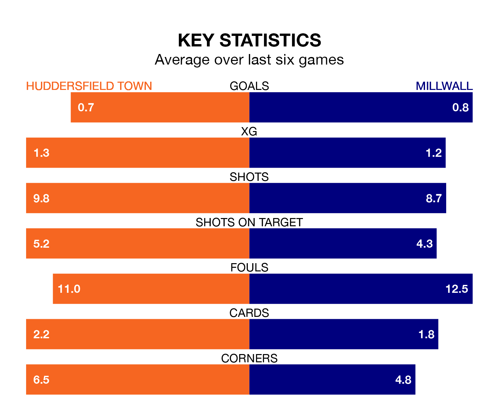

Huddersfield Town face Millwall at the John Smith's Stadium on Saturday looking to secure a first win in seven EFL Championship games.
The Terriers have lost three and drawn three matches since they last earned three points – against Watford on February 24.
They face a Millwall side who have won two and drawn two over that time.
Huddersfield are 22nd in the table after 40 games, of which they have won eight and drawn 16, earning 40 points.
Millwall are three places ahead of Town in 19th, with 11 wins and 11 draws putting them on 44 points.
In the last 10 years, Huddersfield and Millwall have played each other on 11 occasions. Huddersfield won six of them, Millwall three, and they drew twice.
On average, the Terriers scored 1.3 goals and the Lions 1.0 in those matches.
Their last meeting was on December 16, when they played out a 1-1 draw.
With 38 goals in 40 games so far this season, the Lions are scoring at below the league average rate with 0.9 goals per game. But they are conceding fewer than average too, letting in 53 goals at a rate of 1.3 per game.
The Terriers are also below average scorers, with 1.1 goals per game, compared to a league average of 1.4. They have conceded 1.6 goals per game.
Huddersfield's last match was on Monday, a 1-1 draw against Stoke City, with Bojan Radulović getting the goal for the Terriers.
Millwall lost 2-1 against Rotherham United last time out, also on Monday.
Saturday's match will be refereed by James Linington, who has taken charge of 16 EFL Championship games so far this season, issuing one red card and booking 75 players. He has awarded five penalties.
The last Huddersfield game Linington refereed was a 1-1 away draw with Blackburn Rovers on January 20. His last Millwall match was their 1-1 draw at home against Sunderland on December 2.
Updated: 16:41 (UTC), 04/04/24